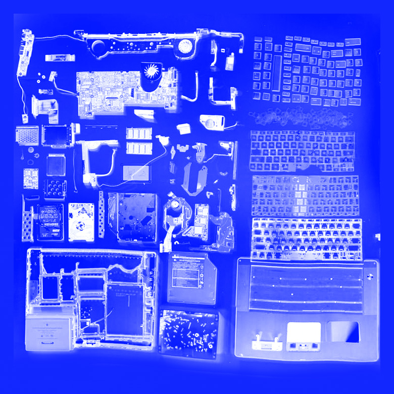
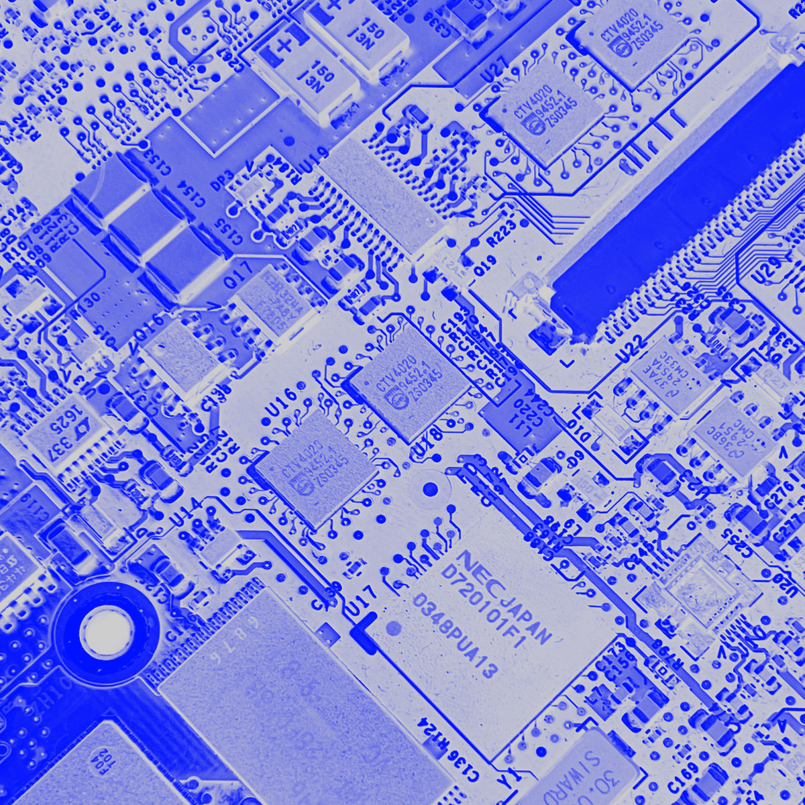
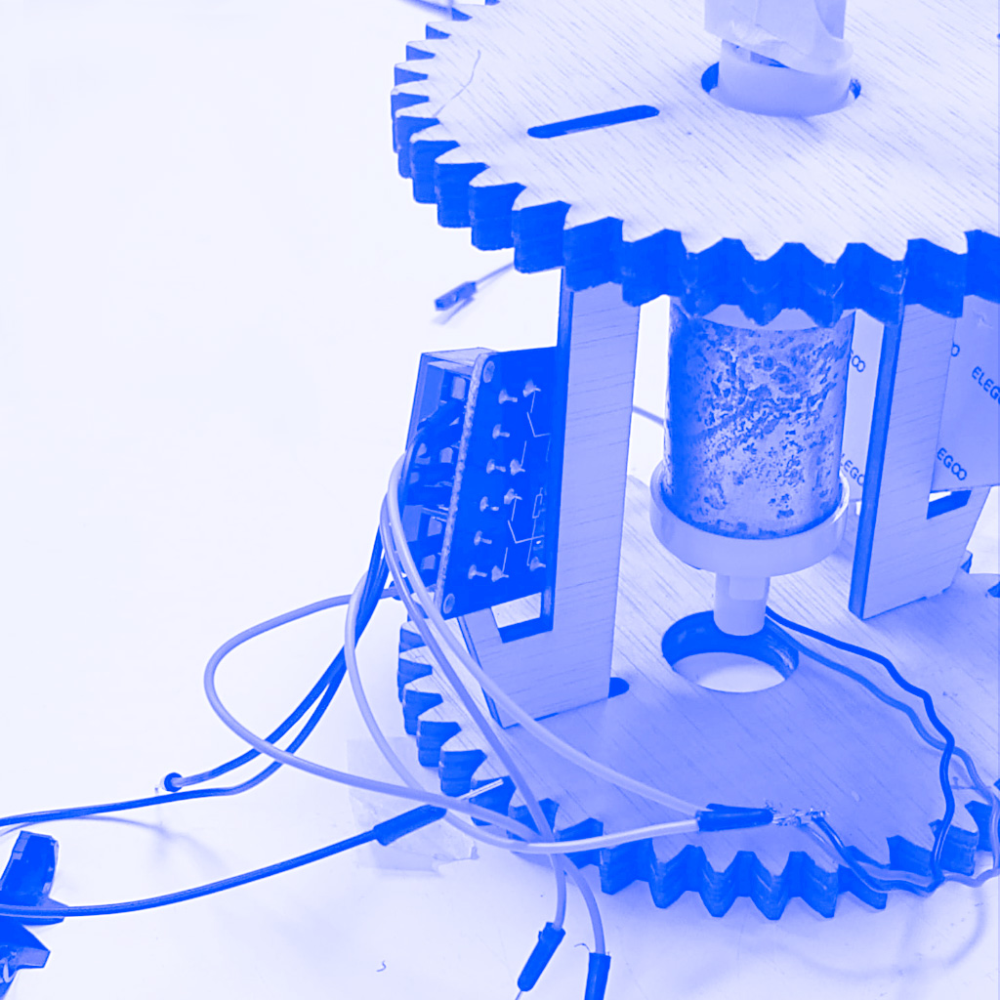

Tech Beyond the Myth is a seminar that feels like a whole world by itself. Perfectly structured, thorough enough but doesn’t oversaturate us with information. Balances perfectly between practice and theory, builds momentum and repurposes its own activities to make new ones. I think by far this seminar was the best, simply because it made sense and it felt like there was a progress curve that wouldn’t get reset the second day or the second week.
The seminar started with Forensics of Obsolescence, a 1-day segment which consists of splitting us into groups, and having each group choose an electronic device to be dissected and taken apart. We chose a laptop, a 2003 version Macbook as our experiment target. We unzipped our tool kits and started taking it apart screw by screw until there was nothing left to unscrew and all the elements that make up the Macbook were spread flat on the table[1].
This was a super interesting activity that helped understand the way these almost “magical” devices function, as we tore apart the black boxes that we never could afford to before. We identified every element, its manufacturer, its usage and how it is employed in the overall device, as we filed a forensic report of our dissection shared in the link below.
Following Forensics of Obsolescence, Measuring the World was up next. This segment of the course helped us understand how data can be collected, using different methods of data collection and showing us how we could visualize this collected data. For this activity, we were also split into groups where we would find a common goal, propose a hypothesis and use an assigned device to collect data and either confirm or negate our presented hypothesis.
Our assigned device was a light sensor, and our problematic was that young people in Barcelona are lonely due to their phone usage. We wanted to create a device that could measure how much people use their phones under the table in public gatherings using the light sensors. We used Arduino to track the light detected by the sensor. We also had to fill out a form on HackMD [linked below] of what we were doing and an overview of our collected data. After that, we had to present to the class what we came up with. What was interesting about this activity is that every group got a different tool to collect data, including webscraping, a tiny camera, cardboard, etc… We saw how every group managed to come up with interesting insight.
Finally, we moved on to the Almost Useless Machines, which was by far the most interesting of all the activities. The purpose of this activity was to use some of the components of the previously dissected electronics to build fully functioning, useless machines. What I really liked about this workshop is the way we assembled the team, as we had to evaluate our skills on a scale of 1 to 5 and create balanced groups when it comes to knowledge. We ended up doing a mirror[2] that turns when you approach it, we called it “The Mirror that Doesn’t Want To See You”. It took a lot of organization of the tasks and planning but we managed to pull it off. We used an Infrared sensor to detect presence in front of the mirror and a motor to make it rotate away, and we had to build a stand using laser cut wood as well as a 3D printed component.
As part of Almost Useless Machines, we had to document, visualize, take a video of our machine in order to finally showcase it to the class. All in all, this was a great course and workshop which triggered our curiosity and helped us gradually understand how things are built and how we can reverse engineer these resources to build completely different things.